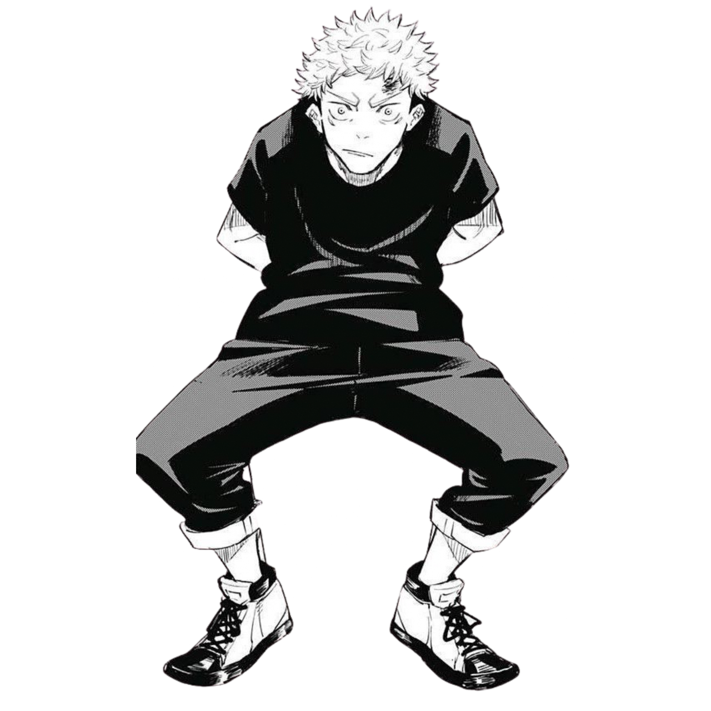

Yuji Itadori (Japanese: 虎杖 悠仁, Hepburn: Itadori Yūji) is a fictional character and the main protagonist of the manga series Jujutsu Kaisen, created by Gege Akutami. Yuji is a first-year Jujutsu Sorcerer at Tokyo Jujutsu High who is thrown into the world of sorcery after he ate a Cursed Object: a finger belonging to Ryomen Sukuna, a powerful sorcerer from the Heian period of Japan. With his classmates, Yuji exorcises Curses while trying to honor his grandfather's legacy and save others unconditionally so that when he is executed after eating all twenty fingers, he will not be alone in his death.
